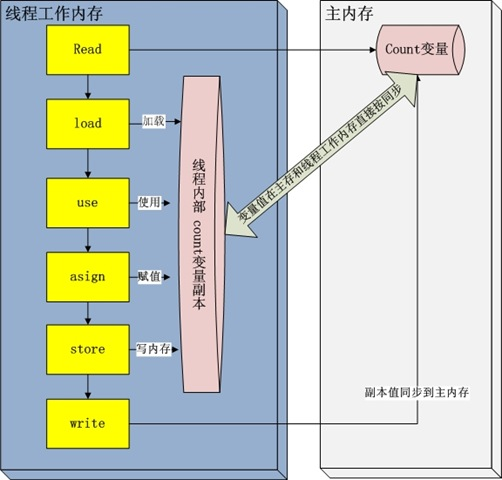

在上一篇博客JVM–解析Java内存区域及数据的内存分配与线程安全之间的一些联系中也说到了，想要理解volatile关键字，我们需要掌握Java虚拟机运行时数据区的相关知识，但是这还不够，只有理解了Java的内存模型，我们才能开始讲述volatile，而Java虚拟机运行时数据区是掌握Java内存模型的基础，所以如果你还没有看上一篇博客，请点击上方链接～～～
引言
既然本节讲述volatile关键字，那么就先抛个砖引个玉（以下代码在64位jdk1.8下进行测试，不同jdk版本运行结果有可能不一样）：
1 | public class RunThread implements Runnable { |
1 | public class Run { |
大家认为上面的代码能够停下来吗？答案是不行。
我先给大家说明几点原因吧，具体的细节我接下来会慢慢讲述。首先来解释一下为什么我会说在64位jdk1.8下面测试有效，而其他版本运行结果会有所不同。
这里涉及到一点JVM的知识，但是并不难懂，你只要记住就行了。出现这样结果的直接原因，并不是根本原因，是在于我们使用64位jdk1.8的时候只能运行在Server模式下。你说什么是Server模式？别急，看下面：
JVM Server模式与client模式启动，最主要的差别在于：-Server模式启动时，速度较慢，但是一旦运行起来后，性能将会有很大的提升。原因是：当虚拟机运行在-client模式的时候，使用的是一个代号为C1的轻量级编译器，而-server模式启动的虚拟机采用相对重量级，代号为C2的编译器。 C2比C1编译器编译的相对彻底，服务起来之后，性能更高。
然后如果是64位的jdk 1.8，只能运行在Server模式下。
这种模式为什么会造成程序没办法停止呢？一个线程明明对共享变量作出了修改，其它线程却没办法看到，这不是有悖于上一节所说的吗。
在这里先浅显的说明一下Server模式到底会对线程造成什么样的影响。当程序被启动时，变量private boolean isRunning存在于共享堆与线程的私有栈之中。并且当JVM被设置为-server模式时，为了线程的运行效率，线程会一直在私有堆栈中取得isRunning的值是true。而代码Runthread.setRunning(false)虽然被执行，更新的却是共享变量也就是公共堆里面的isRunning，因此一直都是死循环状态，线程无法停止。
看完上面这句话，也许你已经大概知道了为什么线程没有停止，但是等等，好像有什么不对，为什么在程序启动时，共享变量private boolean isRunning会同时存在于共享堆与线程的私有栈之中呢？好了，要明白这个问题，就是这篇博客将要讲述的重点，我们也会在搞清楚这个知识点之后，再回头看volatile。
什么是Java内存模型
既然我们要讲Java的内存模型，那么首先肯定要知道它是什么。
首先来说一说“内存模型”这个抽象的概念。
我们知道如今计算机处理的任务都不可能是单靠处理器就能完成的，它至少要完成与内存的交互，如读取数据，存储运算结果等。但是存储设备与处理器的运算速度都是几个数量级的差距，所以当计算机在进行I/O操作的时候，处理器势必会等待这样缓慢的内存读写。于是聪明的人们就在计算机中加入了一层读写速度尽可能接近处理器的高速缓存。它的运行机制以及功能我就不进行描述了，直接说它所带来的问题，虽然它很好的解决了处理器与存储的速度矛盾，但是它也为计算机系统带来更高的复杂度以及一个新问题：缓存一致性。
缓存一致性：
在多处理器系统中，每个处理器都有自己的高速缓存，而它们又共享同一主内存，当多个处理器的运算任务都涉及同一块主内存区域时，而它们各自的缓存数据又不一致，那么同步回主内存时以谁的缓存数据为主呢？
为了解决这个问题，需要各个处理器访问缓存时都遵循一些协议，在读写时要根据协议来进行操作，这些协议的种类很多，我就不举例子了。而内存模型就可以理解为在特定的操作协议下，对特定的内存或高速缓存进行读写访问的过程抽象。
上图说明了处理器，高速缓存，主内存之间的交互关系。
Java虚拟机规范中试图定义一种Java内存模型（JMM）可以用来屏蔽掉各种硬件和操作系统的内存访问差异，以实现让Java程序在各种平台下都能达到一致的内存存储效果。
主内存与工作内存
我们已经了解了Java的内存模型是什么以及它有什么用，现在就来谈一谈主内存与工作内存，这也是理解volatile关键字的关键所在。
Java内存模型规定了所有变量都存储在主内存中，注意，这里说的变量与平常Java编程中说的变量有所区别，它包括了实例字段，静态字段和构成数组对象的元素，它不包括局部变量与方法参数，因为后者是线程私有的。也就是说，我们可以这样理解，除过线程私有的局部变量和方法参数之外，所有的变量都存在于主内存中。（本篇博客中的所有变量都特指这种共享变量）
忘了说一点，我们现在讨论的主内存，只是虚拟机内存的一部分，而虚拟机内存也只是物理内存的一部分。
上面说了主内存，那么再来谈一谈工作内存，上面讲的主内存可以和计算机中的物理内存进行类比，而工作内存可与高速缓存类比。工作内存是 JMM 的一个抽象概念，并不真实存在。它涵盖了缓存，写缓冲区，寄存器以及其它的硬件和编译器优化。
关于上面说到的缓存和缓冲区的区别，我特地百度了一下，发现了一名知乎用户的回答Cache 和 Buffer 都是缓存，主要区别是什么？
每个线程都有一个自己的工作内存，该内存空间保存了被该线程使用到的变量的主内存副本，线程对变量的所有操作（读取，赋值等）都必须在工作内存中进行，而不直接读写主内存中的变量。看了这段话也许你会问，那假如线程访问一个10MB的对象，难道也会把这10MB的内存复制一份拷贝出来？这当然是不可能的，它有可能会将对象的引用，对象中某个线程访问到的字段拷贝出来，但绝不会将整个对象拷贝一次。
上图是线程，工作内存，主内存三者之间的交互关系。
我觉得你现在一定有一个疑惑，那就是JMM和Java虚拟机运行时的数据区到底有什么区别。
引用一段《深入理解Java虚拟机》上的解释：
这里所讲的主内存，工作内存与Java内存区域中的Java堆，栈，方法区等并不是同一个层次的划分，这两者基本上是没有关系的。如果两者一定要勉强对应起来，那么变量，主内存，工作内存依次对应Java堆中对象实例数据部分，工作内存对应虚拟机栈中的部分区域。从更低层次上来说，主内存直接对应于物理硬件的内存，工作内存优先存储于寄存器以及高速缓存。
结合上面的这些官方定义，我们大致总结起来其实就一句话，对于Java内存模型来说，只不过就是它在每个线程访问共享变量的时候，为了提高处理器处理数据的效率，增加了一个并不真实存在的，概念上的工作内存，每个线程对共享变量的访问相当于都是先将主内存中的变量拷贝到自己的工作内存中，然后对自己工作内存中存在的变量进行读写，操作完之后将它同步回主内存罢了。
内存交互操作
既然上面讲到了主内存和工作内存，现在我们再来详细讨论一下一个变量是怎么从主内存拷贝到工作内存的，而工作内存的变量又是怎么同步回主内存的呢？
我们先来了解一下JMM定义的8种原子性操作，看一下图解：

上图说明了工作内存和主内存之间交互的步骤，还有图上缺少的两种原子性操作分别是lock锁定，unlock解锁。由于这两个操作和内存之间的交互并没有关系，所以分开来说。
我们先来说一下图中的每个操作都是干嘛的：
- read（读取）：作用于主内存变量，把变量的值从主内存传输到线程的工作内存
- load（载入）：作用于主内存变量，把read操作从主内存中得到的变量值放入工作内存的变量副本中
- use（使用）：作用于工作内存变量
- assign（赋值）：作用于工作内存变量
- store（存储）：作用于工作内存变量，将工作内存中一个变量的值传送回主内存
- write（写入）：作用于主内存变量，将工作内存中得到的变量值放入主内存的变量中
在《深入理解Java虚拟机》一书中，对于use和assign的描述涉及到了执行引擎，所以我在上面并没有详细的说明。另外我发现《Java多线程编程核心技术》这本书也对上面的原子性操作做了一个简明的说明，所以再来看看它是怎么说的：
- read与load：从主存复制变量到当前线程工作内存
- use与assign：执行代码，改变共享变量值
- store与write：用工作内存数据刷新主存对应变量的值
另外关于上面所说的lock与unlock，它实际就是我们平常在代码中写的同步块synchronized，说点题外话，同步块既保证多线程安全时所需要的原子性，而且也保证了可见性与有序性，所以我们经常可以看到程序员在滥用synchronized，虽然它的确比较“万能”，但是越“万能”的并发控制，通常也会伴随越大的性能影响。扯远了。。。
volatile
现在我们对Java内存模型已经有了一定的认识，这个时候我们再来谈谈volatile这个轻量级同步机制。
首先来看volatile的作用：
强制从公共堆中取得变量的值，而不是从线程的私有堆栈中取得变量的值。如果我们需要用一张图来描述这个过程的话，就是这样：
从图中可以看到，volatile保证了变量的新值能立即同步到主内存，以及每次使用之前立即从主内存刷新。因此可以说volatile保证了多线程操作时变量的可见性，而普通变量不能保证这一点。
说了这么多，现在的你应该可以明白引言中的代码为何不会停止，并且就算以后碰到上面那种格式的代码也应该知道错误出在哪然后加以改正。
指令重排序与内存屏障
解决了上面的问题，我们并不能结束，因为Java的内存模型还有很多东西都没有提到，当然，博主在学习的过程中看到有人说过光是JMM的知识就可以写一本书，所以在这里也只是给大家提一下，并不能完全剖析JMM，其中有错误的地方还是欢迎大家指出。而且，volatile也并没有讲述完毕，现在只是将上面那个代码的问题解决了而已。
如果你还想要探究volatile的其它特性，这些东西你不得不去掌握。
初看这两个词语，完全不知道它说的是什么意思。这算是Java比较底层的相关知识了，没听过也很正常，但也不用怕，让我们来一点点攻克这两个看起来很不友好的东西。
指令重排序
指CPU采用了允许将多条指令不按程序规定的顺序分开发送给各相应电路单元处理。但并不是说指令任意重排，CPU需要能正确处理指令依赖情况以保证程序能得出正确的执行结果。
什么叫指令依赖，举个例子：
假设指令1将地址A中的值加10，指令2将地址A中的值乘以2,指令3将地址B中的值减去3，这时指令1和指令2是有依赖的，它们之间不能重排，明显(A+10)2与A2+10不等，但是指令3可以重排到指令1，2之前或中间。
这就是指令重排序，设计它的目的就是为了提高程序并发能力，具体参见指令重排序。这篇博客详细但很浅显的讲述了指令重排序，我也就不过多叙述了。
内存屏障
这个东西还是给大家放一个比较可靠的链接吧，由于博主水平有限，对于自己不太清楚的东西也不敢给大家胡乱总结，所以还是将我学习内存屏障中读起来不错的博客链接分享给大家：内存屏障
看完这篇博客我的感觉就是内存屏障其实还是一种用于保证变量可见性的技术手段，它通过store屏障和load屏障保证更改后的数据能及时的刷进缓冲区，保证各个线程可以从缓冲区中读到最新的数据。
通过对volatile进行反汇编，我们可以看到volatile实际上就使用到了内存屏障技术来保证其变量的修改对其他CPU立即可见。
happends-before（先行发生）原则
按照上面的惯例，这些东西只要分开来写都可以单独写成一篇文章，加上我自觉目前不会比别人写的更通俗易懂并且保证博客中不出现错误，所以我还是扔一篇我学习之后觉得还不错的博文：俗解happends-before
在《深入理解Java虚拟机》这本书中，感觉也没太说清楚这个原则到底是怎么一回事，它还列举了JMM中存在的8条“天然的”先行发生关系，并且说如果两个操作之间的关系无法从这8条规则推导出来，那么它们就没有顺序性保障，虚拟机可以对它们随意进行重排序。说实话对于那八条规则目前来说我懒得去记，因为我觉得就算我死记下来那些也不是我的东西，如果大家有兴趣的话，可以下去找找看那八条规则，他说可以通过这8条规则一揽子解决并发环境下两个操作之间是否可能存在冲突的所有问题，我看了一道例题，觉得过于抽象并且死板，我觉得是我目前还没有领会到精髓吧。
再谈volatile
关于volatile，还有一些细节值得我们去考虑，比如volatile只能保证数据的可见性，不能保证原子性；而synchronized可以保证原子性，也可以间接保证可见性，因为它会将工作内存和主内存中的数据做同步。
关于volatile不保证原子性，最明显的例子就是i++这样的表达式了。我们在来说一下i++的操作步骤：
- 从内存中读取i的值；
- 计算i的值；
- 将i的值写到内存中。
我们可以看到，在多线程环境下，对于i++这种操作，即使对i使用volatile，也只是表示在read与load之后加载内存中的最新值，但如果主内存中的i还在发生修改，然而线程工作内存中的值已经加载，不会产生对应的变化，也就是说线程的工作内存和主内存中的变量不同步，所以计算出来的结果还是会和预期不一样，因此volatile无法保证操作的原子性。